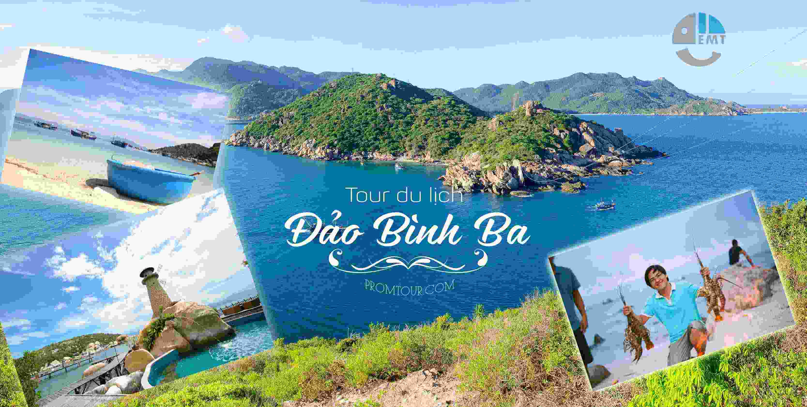

Du lịch đảo bình ba
Bình Ba là một đảo nhỏ, diện tích trên 3km2, thuộc xã Cam Bình, thành phố Cam Ranh, tỉnh Khánh Hòa. Cách Nha Trang 60 km, cách thành phố Hồ Chính Minh tầm 390km. Muốn đến Bình Ba, bắt buộc chúng ta phải đến cảng Ba Ngòi. Cảng Ba Ngòi cách sân bay Cam Ranh 15km, Bình Ba cách cảng Ba Ngòi cũng 15km.
Trước đây, Bình Ba là đảo quân sự, hạn chế dân ở ngoài vào đảo. Bây giờ, luật lệ đã được nới lỏng, nhưng vẫn cấm người ngoại quốc. Đây cũng là lý do, vì sao bây giờ đảo Bình Ba mới nổi tiếng! Ngoài ra, nếu không muốn bị đuổi khỏi đảo sớm, bạn cũng không nên tò mò đến những vùng bị quân đội cấm hoặc có những hành động gây rối, quá khích.